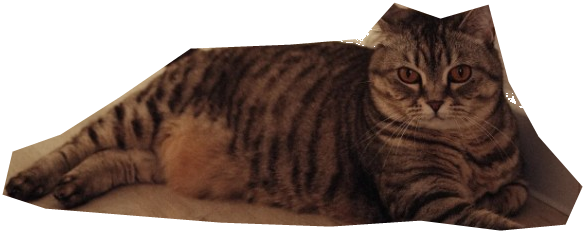

ДИСТАНЦИЯ0 м
МОНЕТЫ● 0
ГОРОД ЖДЁТ ТЕБЯ
Маленькие лапы.
Большой побег.
Три полосы, тысяча приключений
и одна очень любопытная кошка.
Личный рекорд 0 м
Не удалось загрузить кошку. Проверьте папку assets и перезагрузите страницу.
ЗНАКОМЬСЯ, НЭНСИК

Та самая кошка. Только быстрее.
CITY RUN / 01 СОЛНЕЧНЫЙ МАРШРУТ
МОЖНО ПЕРЕВЕСТИ ДУХ
Лапки отдыхают
Продолжим с того же места.
ЕЩЁ ОДНО ПРИКЛЮЧЕНИЕ?
Хороший забег!
Нэнсик цела. А маршрут уже ждёт.
0МЕТРОВ
0МОНЕТ
NENSIK / CITY RUN